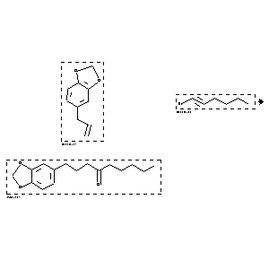

|  |
| FA | RX(1); FLST(1); RX(2) |
Reaction (1 of 1)
| Reaction ID | 1767837 |
| Reactant BRN | 136380; 1616336 |
| Reactant | 5-allyl-benzo[1,3]dioxole; 1-bromo-hex-1-yne |
| Product BRN | 4482556 |
| Product | 1-benzo[1,3]dioxol-5-yl-nonan-4-one |
| No. of Reaction Details | 2 |
Reaction Details (1 of 1)
| Reaction Classification | Preparation |
| Comment | Yield given. Multistep reaction |
| Citation Pointer | 5572223; Journal; Kulkarni, Surendra U.; Lee, Hsiupu D.; Brown, Herbert C.; SYNTBF; Synthesis; EN; 3; 1982; 193-195; |
Reaction Details (2 of 1)
| Reaction Classification | Preparation |
| Reagent | 1.) thexylchloroborane, 2.) KBH(OPr-i)3, 3.) NaOMe, 4.) NaOH, H2O2 |
| Comment | Yield given. Multistep reaction |
| Citation Pointer | 5697689; Journal; Brown, Herbert C.; Basavaiah, D.; Kulkarni, Surendra U.; Lee, Hsiupu D.; Negishi, Ei-ichi; Katz, Jean-Jacques; JOCEAH; J.Org.Chem.; EN; 51; 26; 1986; 5270-5276; |
Reference (1 of 2)
| Citation Number | 5572223 |
| Document Type | Journal |
| Authors | Kulkarni, Surendra U.; Lee, Hsiupu D.; Brown, Herbert C. |
| CODEN | SYNTBF |
| Journal Title | Synthesis |
| Language Code | EN |
| Number | 3 |
| Publication Year | 1982 |
| Page | 193-195 |
Reference (2 of 2)
| Citation Number | 5697689 |
| Document Type | Journal |
| Authors | Brown, Herbert C.; Basavaiah, D.; Kulkarni, Surendra U.; Lee, Hsiupu D.; Negishi, Ei-ichi; Katz, Jean-Jacques |
| CODEN | JOCEAH |
| Journal Title | J.Org.Chem. |
| Language Code | EN |
| (Series) Volume | 51 |
| Number | 26 |
| Publication Year | 1986 |
| Page | 5270-5276 |